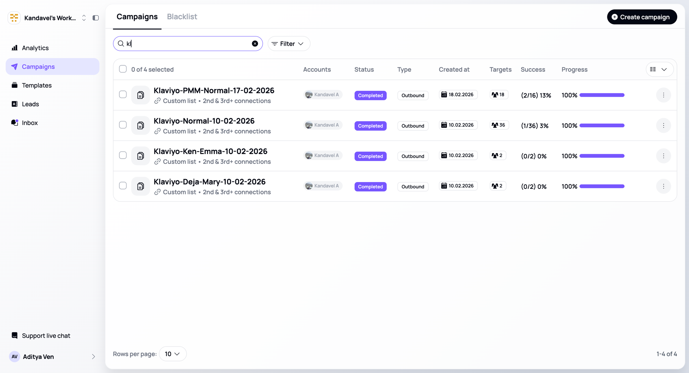

01 / 08 · selected work
Type
Autonomous agent
Outbound delivery
Outbound delivery
Stack
Claude Agent SDK
OpenCLAW
Aimfox API
MongoDB · Node
live
Partha
LinkedIn Campaign Autopilot
Drop a doc, say “go,” and LinkedIn campaigns go live.
An OpenCLAW agent (Claude Agent SDK) that recreates the Aimfox API to run LinkedIn outreach end to
end. Phase 1 extracts copy from a .docx, builds templated messages, and pulls matching
leads from MongoDB. Human approval gate. Phase 2 runs a 10-step pipeline per campaign —
create → target → resolve audience → match template → preview → schedule → activate — across separate
workspaces per account, with a daily cron health-check.
~100 campaigns live / doc → live in ~6 min / 2-phase + approval gate
user › create a LinkedIn campaign for this [+ klaviyo-outreach.docx]
🔒 workspace confirm: account=<workspace> campaign=Klaviyo-PMM-leads leads=39 proceed? yes
[phase 1] extracting copy → building templates
[phase 1] ✅ klaviyo_normal {{FIRST_NAME}}, {{CURRENT_COMPANY}}
[phase 1] ✅ klaviyo_ken_emma {{FIRST_NAME}}, {{CURRENT_COMPANY}}
[phase 1] ✅ klaviyo_deja_mary {{FIRST_NAME}}, {{CURRENT_COMPANY}}
[phase 1] querying MongoDB salesnav → 39 leads w/ LinkedIn URLs
[phase 1] ✅ csv: normal=35 · ken_emma=2 · deja_mary=2 ⏱ 1m32s
user › approved
[phase 2] Klaviyo-Normal-10-02-2026
[1/10] create campaign ✅ [4/10] audience resolved ✅ 35 profiles
[7/10] preview "{{FIRST_NAME}} — {{TITLE}}" → "Hi {{FIRST_NAME}}, noticed {{COMPANY}}'s…" ✅
[10/10] activate ✅ ACTIVE
[phase 2] ✅ 3 campaigns · 39 leads LIVE ⏱ 4m12s
▸ evidence — representative end-to-end run: doc in, 3 campaigns live

▸ evidence — the live Aimfox workspace: campaigns activated by Partha, 100% complete (account redacted)